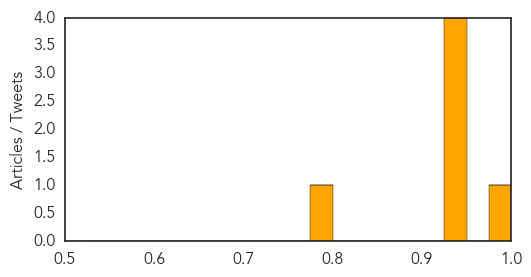

Mold/Fungal
30-Day Web Trend
0 alerts, 1 warnings

30-Day Twitter Trend
0 alerts, 0 warnings

Article Locations

Article Confidences

Top Articles:
Top Tweets:
-
No tweets found for Aug 11, 2015
West Nile Virus
30-Day Web Trend
0 alerts, 0 warnings

30-Day Twitter Trend
0 alerts, 0 warnings

Article Locations

Article Confidences
Top Articles:
- 0.997
- Waushara County reports first case of West Nile
- 0.939
- Mosquito season can bring diseases
- 0.939
- Protect Yourself From West Nile Virus With These ‘5 Ds’
- 0.930
- 4 new human cases of West Nile virus in Mississippi
- 0.928
- Diseases prompt caution from Wyoming State Veterinary Laboratory director
- 0.792
- West Nile Virus Found in Greenwich Mosquitoes
Top Tweets:
- 0.616
- Flavivirus news: West Nile virus discovered in Md. mosquitoes - WTOP: WTOPWest Nile virus disco... http://t.co/kxoyim8lJO pathogenposse